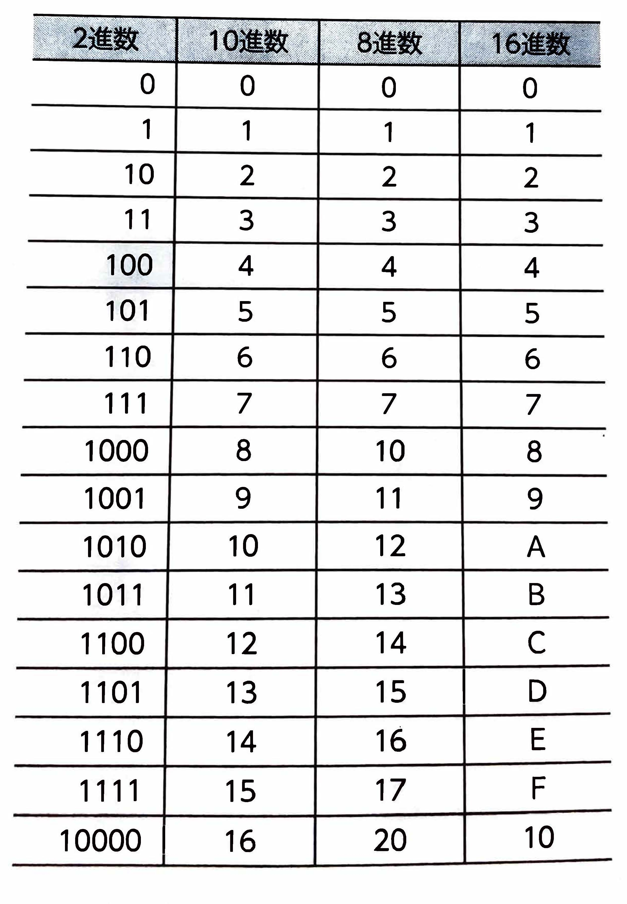

表示
｢離散数学｣
と密接な関係にあります。離散数学は、コンピュータの論理回路やデータ構造、言語倫理などの幅広い分野の基礎となるものです。｢0｣
と｢1｣
で組みわわされた数値で表現され、この2種類の数字で情報を表す方法を｢2進数｣
といいます。2進数は人間にとって判断しにくいという特徴があるため、通常使っている0~9の数字を使った｢10進数｣
に置き換えて表現されます。0、1までは同等ですが、２進数での２以降の数値は桁が上がって表現されます。｢8進法｣
や、0~9の数字とA～Fのアルファベットを使った｢16進数｣
などがあります。